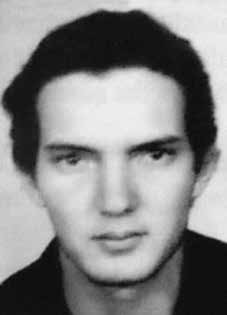

Eduardo
Collier
Filho
CIRCUNSTÂNCIAS DA MORTE
Eduardo desapareceu na cidade do Rio de Janeiro, no dia 23 de fevereiro, durante o carnaval de 1974, data em que tinha um encontro marcado com o colega Fernando Augusto de Santa Cruz Oliveira na rua Prado Júnior, Bairro de Copacabana. Quando deixou a casa do seu irmão, Fernando havia avisado sua família que, se não retornasse até às 18 horas, deveriam suspeitar de sua prisão. Fernando tinha feito essa advertência aos familiares porque sabia da situação delicada de Eduardo, que estava sofrendo um processo na Justiça Militar. Como Fernando não retornou, após verificarem se ele havia sido detido, seus familiares foram até a residência de Eduardo a fim de obter notícias. Souberam, então, que elementos das forças de segurança haviam estado no apartamento e levado alguns livros, o que indicava que os dois militantes tinham sido capturados. Eduardo e Fernando foram presos em 23 de fevereiro de 1974, possivelmente por agentes do DOI-CODI do I Exército, no Rio de Janeiro, e nunca mais foram vistos. As famílias de Fernando e Eduardo apressaram-se em contatar diferentes organismos, nacionais e internacionais, e pessoas públicas que poderiam fornecer ou obter notícias sobre os dois. Informalmente, receberam uma informação da Cruz Vermelha Brasileira que afirmava que os dois estariam do DOI-CODI do II Exército, em São Paulo. A irmã de Fernando, Márcia Santa Cruz Freitas, a mãe e a irmã de Eduardo compareceram prontamente no quartel-general do II Exército. Na sede do II Exército, receberam de um funcionário identificado como Marechal a informação de que os dois militantes encontravam-se nas dependências daquele órgão. As famílias deixaram, então, alguns pertences dos rapazes e foram instruídas a retornar no domingo, dia oficial de visita. Ao voltarem no domingo, novamente não puderam vê-los, sob a justificativa, dada pelo funcionário chamado Doutor Homero, de que tinha havido um equívoco e que os dois não estavam presos no DOI-CODI/SP. No dia 18 de março, a mãe de Eduardo enviou uma carta endereçada ao advogado Augusto Sussekind de Moraes Rego relatando o ocorrido, e o advogado impetrou um pedido de habeas corpus na tentativa de localizar o militante e identificar os responsáveis pela sua prisão. As famílias de Eduardo e Fernando continuaram um longo processo de busca, primeiro do paradeiro dos dois militantes e, em seguida, das circunstâncias de morte e do destino de seus corpos. Enviaram cartas a diversas autoridades, políticos e instituições de defesa dos direitos humanos, apresentaram denúncias à Comissão Interamericana de Direitos Humanos (CIDH) e à Anistia Internacional, levaram os casos ao Tribunal Bertrand Russel. As denúncias pressionaram o então Ministro da Justiça, Armando Falcão, a dar uma resposta sobre a situação dos dois desaparecidos. Em pronunciamento oficial divulgado no dia 6 de fevereiro de 1975, o Ministro informou sobre Eduardo: “encontra-se foragido, existindo mandado de prisão contra o mesmo, da 1ª Auditoria da 2ª CJM”. Em 28 de abril de 1975, reagindo às interpelações dirigidas ao governo brasileiro pela CIDH sobre o Caso n° 1844, a denúncia de desaparecimento de Eduardo e Fernando, o Ministro da Justiça, Armando Falcão, encaminhou ao Ministro das Relações Exteriores as seguintes informações: com relação a Fernando, “É procurado pelos Órgãos de Segurança e se encontra na clandestinidade” e, sobre Eduardo, repetiu as informações do pronunciamento anterior. Já na década de 1990, o Relatório da Marinha enviado ao então Ministro da Justiça, Maurício Corrêa, em dezembro de 1993, afirmou que Eduardo “desapareceu quando visitava parentes na GB”, em fevereiro de 1974, e que, na época, “respondia processo por atividades políticas na 2ª Auditoria Militar de São Paulo”. Sobre Fernando, consta no mesmo Relatório da Marinha que foi preso no dia 23 de fevereiro de 1974 e é considerado desaparecido desde então. O reconhecimento oficial da prisão de Fernando é reforçado por um documento datado de 1978, originário do Ministério da Aeronáutica, que registra que Fernando foi preso no dia 22 de fevereiro de 1974, no Rio de Janeiro, o que contradiz as informações transmitidas oficialmente pelo Estado brasileiro. Há pelo menos duas hipóteses para explicar as circunstâncias de desaparecimento de Fernando e Eduardo. A primeira diz respeito à possibilidade de terem sido levados do Rio de Janeiro, onde foram capturados, para o DOI-CODI/SP. Como relatado, os familiares chegaram a receber de um funcionário chamado Marechal a informação de que os militantes estavam presos naquele órgão. A suspeita é reforçada pela reação do mesmo funcionário que, ao tomar conhecimento dos nomes dos dois militantes procurados, acrescentou o sobrenome “Oliveira” ao nome de Fernando, sem que a família o tivesse mencionado. Essa indicação do DOI-CODI/SP como possível órgão responsável pelo desaparecimento de Fernando e Eduardo levanta a possibilidade de os corpos dos dois militantes terem sido encaminhados para sepultamento como indigentes no Cemitério Dom Bosco, em Perus. A segunda hipótese é a de Fernando e Eduardo terem sido encaminhados para a Casa da Morte, em Petrópolis, e seus corpos levados posteriormente para incineração em uma usina de açúcar. Esta hipótese é embasada, sobretudo, no depoimento prestado pelo exdelegado do DOPS/ES, Claudio Guerra, que afirmou que os corpos dos dois militantes teriam sido incinerados na Usina Cambahyba, em Campos dos Goytacazes (RJ). Em depoimento prestado à CNV, o agente chegou a reconhecer formalmente uma foto de Eduardo Collier e apontá-lo como uma das vítimas que teria transportado para a usina. Em depoimento à Comissão Estadual da Memória e Verdade Dom Helder Câmara (PE), o ex-delegado confirmou que teria recolhido os corpos de Eduardo e Fernando na Casa da Morte, em Petrópolis. O ex-sargento do Exército Marival Chaves também prestou depoimento à CNV e relatou que, no âmbito de uma operação comandada pelo CIE no Nordeste, alguns prisioneiros recolhidos na região nordestina foram enviados para a Casa da Morte, em Petrópolis, com o intuito premeditado de se desaparecer com os corpos. Segundo Marival, Fernando e Eduardo teriam sido vítimas desta operação, o que indica que eles podem ter sido levados ao DOI-CODI/RJ e, de lá, conduzidos para a Casa da Morte em Petrópolis. Eduardo Collier Filho e Fernando de Santa Cruz Oliveira permanecem desaparecidos até hoje.
Eduardo disappeared in the city of Rio de Janeiro, on February 23, during the 1974 carnival, the date on which he had an appointment with his colleague Fernando Augusto de Santa Cruz Oliveira on Prado Júnior street, Copacabana neighborhood. When he left his brother's house, Fernando had warned his family that if he did not return by 6 pm, they should suspect his arrest. Fernando had given this warning to his family because he knew of Eduardo's delicate situation, who was being prosecuted in the Military Court. As Fernando did not return, after checking whether he had been detained, his family went to Eduardo's residence in order to obtain news. They then learned that members of the security forces had been to the apartment and taken some books, which indicated that the two militants had been captured. Eduardo and Fernando were arrested on February 23, 1974, possibly by DOI-CODI agents from the 1st Army, in Rio de Janeiro, and were never seen again. Fernando and Eduardo's families hurried to contact different national and international organizations and public figures who could provide or obtain news about the two. Informally, they received information from the Brazilian Red Cross that stated that the two were from the DOI-CODI of the II Army, in São Paulo. Fernando's sister, Márcia Santa Cruz Freitas, Eduardo's mother and sister promptly attended the II Army headquarters. At the headquarters of the Second Army, they received information from an employee identified as Marshal that the two militants were on that body's premises. The families then left some of the boys' belongings and were instructed to return on Sunday, the official visiting day. When they returned on Sunday, they were again unable to see them, under the justification, given by the employee called Doctor Homero, that there had been a mistake and that the two were not imprisoned at DOI-CODI/SP. On March 18, Eduardo's mother sent a letter addressed to lawyer Augusto Sussekind de Moraes Rego reporting what had happened, and the lawyer filed a request for habeas corpus in an attempt to locate the activist and identify those responsible for his arrest. Eduardo and Fernando's families continued a long process of searching, first for the whereabouts of the two militants and then for the circumstances of their deaths and the fate of their bodies. They sent letters to various authorities, politicians and human rights institutions, filed complaints with the Inter-American Commission on Human Rights (IACHR) and Amnesty International, and took the cases to the Bertrand Russel Court. The accusations pressured the then Minister of Justice, Armando Falcão, to respond to the situation of the two missing people. In an official statement released on February 6, 1975, the Minister informed about Eduardo: “he is on the run, and there is a warrant for his arrest from the 1st Audit of the 2nd CJM”. On April 28, 1975, reacting to inquiries addressed to the Brazilian government by the IACHR regarding Case No. 1844, the report of Eduardo and Fernando's disappearance, the Minister of Justice, Armando Falcão, forwarded the following information to the Minister of Foreign Affairs: regarding Fernando, “He is wanted by the Security Bodies and is in hiding” and, regarding Eduardo, he repeated the information from the previous statement. In the 1990s, the Navy Report sent to the then Minister of Justice, Maurício Corrêa, in December 1993, stated that Eduardo “disappeared while visiting relatives in GB”, in February 1974, and that, at the time, “he was being prosecuted for political activities in the 2nd Military Audit of São Paulo”. Regarding Fernando, it is stated in the same Navy Report that he was arrested on February 23, 1974 and has been considered missing since then. The official recognition of Fernando's arrest is reinforced by a document dated 1978, originating from the Ministry of Aeronautics, which records that Fernando was arrested on February 22, 1974, in Rio de Janeiro, which contradicts the information officially transmitted by the Brazilian State. There are at least two hypotheses to explain the circumstances of Fernando and Eduardo's disappearance. The first concerns the possibility that they were taken from Rio de Janeiro, where they were captured, to DOI-CODI/SP. As reported, the family members received information from an employee called Marechal that the militants were being held in that institution. The suspicion is reinforced by the reaction of the same employee who, upon learning of the names of the two wanted militants, added the surname “Oliveira” to Fernando's name, without the family having mentioned it. This indication by DOI-CODI/SP as a possible body responsible for the disappearance of Fernando and Eduardo raises the possibility that the bodies of the two militants were sent for burial as indigents in the Dom Bosco Cemetery, in Perus. The second hypothesis is that Fernando and Eduardo were sent to the Casa da Morte, in Petrópolis, and their bodies were later taken for incineration in a sugar factory. This hypothesis is based, above all, on the testimony given by the former DOPS/ES delegate, Claudio Guerra, who stated that the bodies of the two militants had been incinerated at the Cambahyba Plant, in Campos dos Goytacazes (RJ). In a statement given to the CNV, the agent formally recognized a photo of Eduardo Collier and identified him as one of the victims he had transported to the plant. In testimony to the State Commission for Memory and Truth Dom Helder Câmara (PE), the former delegate confirmed that he had collected the bodies of Eduardo and Fernando at the Casa da Morte, in Petrópolis. Former Army sergeant Marival Chaves also gave a statement to the CNV and reported that, as part of an operation led by the CIE in the Northeast, some prisoners collected in the Northeast region were sent to the Casa da Morte, in Petrópolis, with the premeditated intention of disappearing with the bodies. According to Marival, Fernando and Eduardo were victims of this operation, which indicates that they may have been taken to DOI-CODI/RJ and, from there, taken to the Casa da Morte in Petrópolis. Eduardo Collier Filho and Fernando de Santa Cruz Oliveira remain missing to this day.
Eduardo desapareció en la ciudad de Río de Janeiro, el 23 de febrero, durante el carnaval de 1974, fecha en la que tenía una cita con su colega Fernando Augusto de Santa Cruz Oliveira en la calle Prado Júnior, barrio de Copacabana. Cuando salió de la casa de su hermano, Fernando había advertido a su familia que si no regresaba antes de las 6 de la tarde, sospecharían de su arresto. Fernando había dado esta advertencia a su familia porque conocía la delicada situación de Eduardo, quien estaba siendo procesado en el Tribunal Militar. Como Fernando no regresó, luego de comprobar si había sido detenido, su familia se dirigió a la residencia de Eduardo para obtener noticias. Luego supieron que miembros de las fuerzas de seguridad habían estado en el apartamento y se habían llevado algunos libros, lo que indicaba que los dos militantes habían sido capturados. Eduardo y Fernando fueron detenidos el 23 de febrero de 1974, posiblemente por agentes del DOI-CODI del 1.º Ejército, en Río de Janeiro, y nunca más fueron vistos. Las familias de Fernando y Eduardo se apresuraron a contactar con diferentes organismos y figuras públicas nacionales e internacionales que pudieran brindar u obtener noticias sobre los dos. Informalmente recibieron información de la Cruz Roja Brasileña que afirmaba que los dos eran del DOI-CODI del II Ejército, en São Paulo. La hermana de Fernando, Márcia Santa Cruz Freitas, madre y hermana de Eduardo acudieron puntualmente al cuartel general del II Ejército. En el cuartel general del Segundo Ejército recibieron información de un empleado identificado como Mariscal de que los dos militantes se encontraban en las instalaciones de ese organismo. Luego, las familias dejaron algunas de las pertenencias de los niños y recibieron instrucciones de regresar el domingo, día oficial de visita. Cuando regresaron el domingo, nuevamente no pudieron verlos, bajo la justificación, dada por el empleado llamado Doctor Homero, de que había habido un error y que los dos no estaban recluidos en el DOI-CODI/SP. El 18 de marzo, la madre de Eduardo envió una carta dirigida al abogado Augusto Sussekind de Moraes Rego informando lo sucedido, y el abogado presentó un recurso de hábeas corpus en un intento de localizar al activista e identificar a los responsables de su detención. Las familias de Eduardo y Fernando continuaron un largo proceso de búsqueda, primero del paradero de los dos militantes y luego de las circunstancias de sus muertes y el destino de sus cuerpos. Enviaron cartas a diversas autoridades, políticos e instituciones de derechos humanos, presentaron denuncias ante la Comisión Interamericana de Derechos Humanos (CIDH) y Amnistía Internacional, y llevaron los casos a la Corte Bertrand Russel. Las acusaciones presionaron al entonces ministro de Justicia, Armando Falcão, para responder a la situación de los dos desaparecidos. En comunicado oficial difundido el 6 de febrero de 1975, el Ministro informó sobre Eduardo: “está prófugo y existe orden de captura en su contra de la 1.ª Auditoría del 2.° CJM”. El 28 de abril de 1975, respondiendo a consultas dirigidas al gobierno brasileño por la CIDH sobre el Caso No. 1844, el informe de la desaparición de Eduardo y Fernando, el Ministro de Justicia, Armando Falcão, remitió la siguiente información al Ministro de Relaciones Exteriores: respecto de Fernando, “es buscado por los Cuerpos de Seguridad y se encuentra escondido” y, respecto de Eduardo, repitió la información de la declaración anterior. En la década de 1990, el Informe de la Marina enviado al entonces Ministro de Justicia, Maurício Corrêa, en diciembre de 1993, afirmaba que Eduardo “desapareció mientras visitaba a familiares en GB”, en febrero de 1974, y que, en ese momento, “estaba siendo procesado por actividades políticas en la Segunda Auditoría Militar de São Paulo”. Respecto a Fernando, se consigna en el mismo Informe de la Marina que fue detenido el 23 de febrero de 1974 y desde entonces se le da por desaparecido. El reconocimiento oficial de la detención de Fernando se ve reforzado por un documento de 1978, procedente del Ministerio de Aeronáutica, que registra que Fernando fue detenido el 22 de febrero de 1974, en Río de Janeiro, lo que contradice la información transmitida oficialmente por el Estado brasileño. Hay al menos dos hipótesis para explicar las circunstancias de la desaparición de Fernando y Eduardo. La primera se refiere a la posibilidad de que hayan sido trasladados desde Río de Janeiro, donde fueron capturados, al DOI-CODI/SP. Según se informó, los familiares recibieron información de un empleado llamado Marechal de que los militantes se encontraban recluidos en esa institución. La sospecha se ve reforzada por la reacción del mismo empleado que, al conocer los nombres de los dos militantes buscados, añadió al nombre de Fernando el apellido “Oliveira”, sin que la familia lo hubiera mencionado. Esta indicación del DOI-CODI/SP como posible organismo responsable de la desaparición de Fernando y Eduardo plantea la posibilidad de que los cuerpos de los dos militantes fueran enviados para sepultura como indigentes en el Cementerio Dom Bosco, en Perus. La segunda hipótesis es que Fernando y Eduardo fueron enviados a la Casa da Morte, en Petrópolis, y luego sus cuerpos fueron llevados para ser incinerados en una fábrica de azúcar. Esta hipótesis se basa, sobre todo, en el testimonio del ex delegado del DOPS/ES, Claudio Guerra, quien afirmó que los cuerpos de los dos militantes fueron incinerados en la Usina Cambahyba, en Campos dos Goytacazes (RJ). En declaraciones dadas a la CNV, el agente reconoció formalmente una fotografía de Eduardo Collier y lo identificó como una de las víctimas que había trasladado a la planta. En testimonio ante la Comisión Estatal de Memoria y Verdad Dom Helder Câmara (PE), el ex delegado confirmó que recogió los cuerpos de Eduardo y Fernando en la Casa da Morte, en Petrópolis. El ex sargento del Ejército Marival Chaves también rindió declaración ante la CNV y denunció que, en el marco de una operación liderada por el CIE en el Nordeste, algunos prisioneros recogidos en la región Nordeste fueron enviados a la Casa da Morte, en Petrópolis, con la intención premeditada de desaparecer con los cadáveres. Según Marival, Fernando y Eduardo fueron víctimas de ese operativo, lo que indica que pudieron haber sido trasladados al DOI-CODI/RJ y, de allí, trasladados a la Casa da Morte, en Petrópolis. Eduardo Collier Filho y Fernando de Santa Cruz Oliveira siguen desaparecidos hasta el día de hoy.